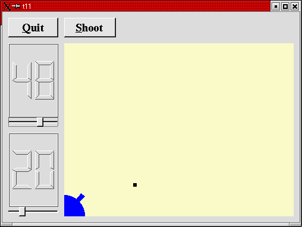
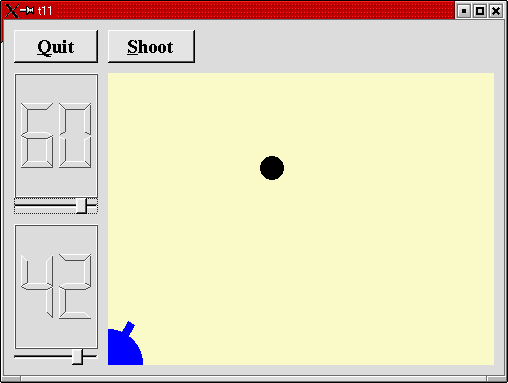

トップページ＞＞＞
「ぷろぐらみんぐ」目次＞＞＞
「Qt Tutorial Index Page」
Chapter 11: Giving It a Shot
初版作成：2002/01/09
- ソースコード
- 解説
- コンパイル・動作確認
- いじくりまわす
- 付録：cannon.h
- 付録：cannon.cpp
- 付録：main.cpp

今回の作例ではタイマーを取り上げます。タイマーを使って弾が発射されて飛んでいくアニメーションを作ります。
ざっと見た感じ、BCBやDelphiなどのTimerと使い方が結構似ている感じですので、シグナルとスロットの流れさえ把握すれば
それほど難しいソースコードではありません。
今回も cannon.h, cannon.cpp, main.cpp が変更されます。ので、最後に付録として掲載しておきます。
付録：cannon.h
付録：cannon.cpp
付録：main.cpp
目次に戻る
それでは各ファイルごとに、ポイント部分の解説を行っていきます。
cannon.h
弾丸を発射できるようにします。
説明にはいる前に、あらかじめシグナルとスロットのつながりを明らかにしておきましょう。
１．弾丸発射ボタンを加える。つまり、clicked()シグナルにたいして弾丸を発射するスロットshoot()も付け足す。
２．一度に描写する弾丸数は一発のみ。
３．弾丸は画面の右端か、下に達すると消滅する。
４．弾丸が発射されている間はQTimerによって50ms毎に弾丸の位置を計算し、描画する。
以上の要件から、今回は次のようなシグナルとスロットのつながりを作りました。
１．発射ボタンクリック→clicked()シグナル→shoot()スロット→タイマースタート。
２．タイマーが50ms毎にタイムアウト→timeout()シグナル→moveShot()スロット→弾丸描画矩形領域を指定したrepaint()。
その他、以下のような点も勘案しました。
１．今回描画するパーツは砲台と弾丸の二つ。paintEventの中身をスマートにするため、paintEventでは再描画の要求された矩形
領域から砲台と弾丸、どちらを再描画するかをintersectsで判別し、分離されたそれぞれの描画処理関数を呼び出すにとどめる。
２．よって、弾丸と砲台それぞれについて、その描画矩形領域を返す****Rect関数と、その描画を行う****Paint関数を実装する。
３．弾丸は発射された瞬間の角度、初速で飛んでいく。そのためshoot()スロットの内部でそのときの角度、初速をshoot_ang,
shoot_fとして保存しておき、描画計算に利用する。
他にもいろいろ勘案されているようです。これ以上はソースコードを参照して下さい。
長くなりましたが、とにかくCannonFieldクラスではtimeout()とmoveShot()のconnectだけをまかなっていることに注意して
下さい。発射ボタンのclicked()とshoot()のconnectはこのクラスの範囲外です。
void shoot();
というわけで、弾丸がまだ発射されていない場合は弾丸を発射するスロットです。
private slots:
void moveShot();
弾丸が発射されていれば、QTimerのtimeout()シグナルに応じて弾丸を描画するために呼び出されるスロットです。
private:
void paintShot( QPainter * );
弾丸を描画するためのプライベートメソッドです。
QRect shotRect() const;
弾丸を描画するのに最低限必要な矩形領域を返します。弾丸が発射されていないときは不定です。
int timerCount;
QTimer * autoShootTimer;
float shoot_ang;
float shoot_f;
};
これらのプライベート変数は弾丸の位置を計算するために使います。timerCountは弾丸が発射されてからの時間をカウントし
ます。shoot_ang と shoot_f は弾丸発射時の砲塔の角度、弾丸の初速度です。
cannon.cpp
#include <math.h>
弾丸の軌道計算にsin(), cos() を使いますので math.h をインクルードしときます。
CannonField::CannonField( QWidget *parent, const char *name )
: QWidget( parent, name )
{
ang = 45;
f = 0;
timerCount = 0;
autoShootTimer = new QTimer( this, "movement handler" );
connect( autoShootTimer, SIGNAL(timeout()),
this, SLOT(moveShot()) );
shoot_ang = 0;
shoot_f = 0;
setPalette( QPalette( QColor( 250, 250, 200) ) );
}
CannonFieldのコンストラクタで QTimer のtimeout()シグナルを、moveShot()スロットとにconnectします。
後で示しますがQTimerは50msにしてありますので、弾丸発射後50ms毎にmoveShot()が呼ばれることになります。
void CannonField::shoot()
{
if ( autoShootTimer->isActive() )
return;
timerCount = 0;
shoot_ang = ang;
shoot_f = f;
autoShootTimer->start( 50 );
}
これが弾丸発射を担うスロットです。最初の isActive() でタイマーが使用中か否かを判別しています。もし使用中なら、
弾丸がまだ飛んでいる途中ですので、何もせずに戻るようにしています。
もし飛んでいなければ、弾丸の軌道計算用時間カウンタ timerCount をゼロに戻し、初期角度、初期速度を保存し、50msで
タイマーをスタートさせます。
void CannonField::moveShot()
{
QRegion r( shotRect() );
timerCount++;
QRect shotR = shotRect();
if ( shotR.x() > width() || shotR.y() > height() )
autoShootTimer->stop();
else
r = r.unite( QRegion( shotR ) );
repaint( r );
}
んで、こいつがQTimer により50ms毎に呼び出される弾丸描画関数の moveShot()スロットです。
弾丸の位置を計算させたり、タイマーをストップさせたり、再描画を要求したりしてます。
最初に、直前の弾丸描画矩形をshotRect()で取得し、そこからQRegionでリージョンを生成しています。
リージョンというのは、現実世界で言う「自由自在に変形できるマスキングテープ」にあたります。
ぶっちゃけた話、適当な図形を組み合わせて、重なったとこだけぬらせるようなマスキングを作ってくれます。んで、そいつを
QPainter::setClipRegion()とかに指定すれば、そこだけ除けて描画してくれるようになります。
今回は単純に、塗りつぶす際の描画範囲を決定するだけに使いました。
最初のshotRect()の後、timeCountをインクリメントしています。よって、それ以降のshotRect()が最新の弾丸描画矩形です。
QRect::x()、QRect::y()はそれぞれ左端のX座標、上辺のY座標です。よって続くif文で、「弾丸描画矩形の左上が画面から
はみ出てしまっているか否か」が判別できるわけです。もしはみ出ていれば、もうその弾丸は計算しなくて良いのでタイマーを
stop()します。
んで、はみ出ていないときは直前の弾丸描画矩形と QRegion::unite で描画領域が合成されます。uniteは論理和にあたります。
つまり、「直前と現在の弾丸位置を表す矩形を両方とも描画する」ようなマスキングテープが生成された訳です。
後はrepaint()でそのマスキングテープを指定するだけです（もちろんrepaint()はQRegionもとれるようになっています）。
void CannonField::paintEvent( QPaintEvent *e )
{
QRect updateR = e->rect();
QPainter p( this );
if ( updateR.intersects( cannonRect() ) )
paintCannon( &p );
if ( autoShootTimer->isActive() &&
updateR.intersects( shotRect() ) )
paintShot( &p );
}
今回のpaintEventは以前に比べてすっきりしました。渡されてきた描画領域を判定して、砲台か弾丸かどちらかの描画関数を
呼ぶだけになっているからです。
また、ペインターもあらかじめここで生成しておき、後の使い方は各描画関数にお任せするようになっています。
上でQRegionがなんたらかんたらしていましたが、そうして渡されてきた描画領域はQRect::intersectsで判定しています。
もちろん弾丸を再描画する際にはタイマーの状態もチェックしておきます。
void CannonField::paintShot( QPainter *p )
{
p->setBrush( black );
p->setPen( NoPen );
p->drawRect( shotRect() );
}
このプライベート関数は弾丸を単純に黒く塗りつぶした矩形として描画しています。
paintCannon()の実装については前回のChapterのpaintEvent()からの焼き直しです。ちゃんとダブルバッファリングになって
います。
QRect CannonField::shotRect() const
{
const double gravity = 4;
double time = timerCount / 4.0;
double velocity = shoot_f;
double radians = shoot_ang*3.14159265/180;
double velx = velocity*cos( radians );
double vely = velocity*sin( radians );
double x0 = ( barrelRect.right() + 5 )*cos(radians);
double y0 = ( barrelRect.right() + 5 )*sin(radians);
double x = x0 + velx*time;
double y = y0 + vely*time - 0.5*gravity*time*time;
QRect r = QRect( 0, 0, 6, 6 );
r.moveCenter( QPoint( qRound(x), height() - 1 - qRound(y) ) );
return r;
}
このプライベート関数では弾丸の中心位置を計算し、弾丸の描画に必要な矩形領域を返します。初期角度と初期速度、そして
50ms毎にカウントアップされるtimerCountが計算に使われます。
計算式は摩擦のない状態でのニュートンの運動方程式をそのまま重力下で適用したものです。いわゆる、放物線運動です。
まず、ニュートンの運動方程式から弾丸の中心位置を計算します。次に 6x6 のQRectを生成します。moveCenter()で生成した
QRectの中心位置を計算結果に合わせます。その際、Y軸座標系がひっくり返る形になりますので、その分の処理が入ります。
qRound()関数は qglobal.h で定義されているインライン関数です（他の全てのQtヘッダファイルからインクルードされて
います）。qRound()は double 型の数値を、直近の整数値に丸めます。
main.cpp
弾丸発射ボタンが加わりました。
QPushButton *shoot = new QPushButton( "&Shoot", this, "shoot" );
shoot->setFont( QFont( "Times", 18, QFont::Bold ) );
Quitボタンの時と同様にShootボタンを作成します。
connect( shoot, SIGNAL(clicked()), cannonField, SLOT(shoot()) );
ここで Shootボタンの clicked() シグナルを CannonFieldクラスの shoot() スロットとconnectしてます。
これによって Shootボタンを押すと弾丸が発射されるようになるわけです。
目次に戻る
んじゃあ、コンパイルしてみましょう。
[fenjin@seisyuu t11]$ ls
cannon.cpp cannon.h lcdrange.cpp lcdrange.h main.cpp
[fenjin@seisyuu t11]$ progen -n t11 -o t11.pro
[fenjin@seisyuu t11]$ tmake -o Makefile t11.pro
[fenjin@seisyuu t11]$ make
g++ -c -pipe -Wall -W -O2 -DNO_DEBUG -I/usr/lib/qt/include -o cannon.o cannon.cpp
g++ -c -pipe -Wall -W -O2 -DNO_DEBUG -I/usr/lib/qt/include -o lcdrange.o lcdrange.cpp
g++ -c -pipe -Wall -W -O2 -DNO_DEBUG -I/usr/lib/qt/include -o main.o main.cpp
/usr/lib/qt/bin/moc cannon.h -o moc_cannon.cpp
g++ -c -pipe -Wall -W -O2 -DNO_DEBUG -I/usr/lib/qt/include -o moc_cannon.o moc_cannon.cpp
/usr/lib/qt/bin/moc lcdrange.h -o moc_lcdrange.cpp
g++ -c -pipe -Wall -W -O2 -DNO_DEBUG -I/usr/lib/qt/include -o moc_lcdrange.o moc_lcdrange.cpp
g++ -o t11 cannon.o lcdrange.o main.o moc_cannon.o moc_lcdrange.o
-L/usr/lib/qt/lib -L/usr/X11R6/lib -lqt -lXext -lX11 -lm
[fenjin@seisyuu t11]$ ls
Makefile cannon.h lcdrange.cpp lcdrange.o main.o moc_cannon.o moc_lcdrange.o t11.pro
cannon.cpp cannon.o lcdrange.h main.cpp moc_cannon.cpp moc_lcdrange.cpp t11*
んで、実行ファイル t11 を実行すると冒頭に示したようなウインドウが表示されるわけです。
Shoot ボタンをクリックすると黒い矩形の弾丸が発射されます。壁にぶつかって消えるまでは次の弾丸は発射できません。
左上のQuitボタンをクリックするとアプリケーションは終了します。
目次に戻る
あー・・・とりあえず、弾丸を（ちょっと大きめですが）丸くしました。というか円です。
cannon.cpp
修正前：
(paintShot())
p->drawRect( shotRect() );
(shotRect())
QRect r = QRect( 0, 0, 6, 6 );
修正後：
(paintShot())
p->drawEllipse(shotRect());
(shotRect())
QRect r = QRect(0, 0, 24, 24);
実行結果を下に示します。

では、次のChapterにてお会いしましょう。
目次に戻る
#ifndef CANNON_H
#define CANNON_H
class QTimer;
#include <qwidget.h>
class CannonField : public QWidget
{
Q_OBJECT
public:
CannonField( QWidget *parent=0, const char *name=0 );
int angle() const { return ang; }
int force() const { return f; }
QSizePolicy sizePolicy() const;
public slots:
void setAngle( int degrees );
void setForce( int newton );
void shoot();
private slots:
void moveShot();
signals:
void angleChanged( int );
void forceChanged( int );
protected:
void paintEvent( QPaintEvent * );
private:
void paintShot( QPainter * );
void paintCannon( QPainter * );
QRect cannonRect() const;
QRect shotRect() const;
int ang;
int f;
int timerCount;
QTimer * autoShootTimer;
float shoot_ang;
float shoot_f;
};
#endif // CANNON_H
目次に戻る
#include "cannon.h"
#include <qtimer.h>
#include <qpainter.h>
#include <qpixmap.h>
#include <math.h>
CannonField::CannonField( QWidget *parent, const char *name )
: QWidget( parent, name )
{
ang = 45;
f = 0;
timerCount = 0;
autoShootTimer = new QTimer( this, "movement handler" );
connect( autoShootTimer, SIGNAL(timeout()),
this, SLOT(moveShot()) );
shoot_ang = 0;
shoot_f = 0;
setPalette( QPalette( QColor( 250, 250, 200) ) );
}
void CannonField::setAngle( int degrees )
{
if ( degrees < 5 )
degrees = 5;
if ( degrees > 70 )
degrees = 70;
if ( ang == degrees )
return;
ang = degrees;
repaint( cannonRect(), FALSE );
emit angleChanged( ang );
}
void CannonField::setForce( int newton )
{
if ( newton < 0 )
newton = 0;
if ( f == newton )
return;
f = newton;
emit forceChanged( f );
}
void CannonField::shoot()
{
if ( autoShootTimer->isActive() )
return;
timerCount = 0;
shoot_ang = ang;
shoot_f = f;
autoShootTimer->start( 50 );
}
void CannonField::moveShot()
{
QRegion r( shotRect() );
timerCount++;
QRect shotR = shotRect();
if ( shotR.x() > width() || shotR.y() > height() )
autoShootTimer->stop();
else
r = r.unite( QRegion( shotR ) );
repaint( r );
}
void CannonField::paintEvent( QPaintEvent *e )
{
QRect updateR = e->rect();
QPainter p( this );
if ( updateR.intersects( cannonRect() ) )
paintCannon( &p );
if ( autoShootTimer->isActive() &&
updateR.intersects( shotRect() ) )
paintShot( &p );
}
void CannonField::paintShot( QPainter *p )
{
p->setBrush( black );
p->setPen( NoPen );
p->drawRect( shotRect() );
}
const QRect barrelRect(33, -4, 15, 8);
void CannonField::paintCannon( QPainter *p )
{
QRect cr = cannonRect();
QPixmap pix( cr.size() );
pix.fill( this, cr.topLeft() );
QPainter tmp( &pix );
tmp.setBrush( blue );
tmp.setPen( NoPen );
tmp.translate( 0, pix.height() - 1 );
tmp.drawPie( QRect( -35,-35, 70, 70 ), 0, 90*16 );
tmp.rotate( -ang );
tmp.drawRect( barrelRect );
tmp.end();
p->drawPixmap( cr.topLeft(), pix );
}
QRect CannonField::cannonRect() const
{
QRect r( 0, 0, 50, 50 );
r.moveBottomLeft( rect().bottomLeft() );
return r;
}
QRect CannonField::shotRect() const
{
const double gravity = 4;
double time = timerCount / 4.0;
double velocity = shoot_f;
double radians = shoot_ang*3.14159265/180;
double velx = velocity*cos( radians );
double vely = velocity*sin( radians );
double x0 = ( barrelRect.right() + 5 )*cos(radians);
double y0 = ( barrelRect.right() + 5 )*sin(radians);
double x = x0 + velx*time;
double y = y0 + vely*time - 0.5*gravity*time*time;
QRect r = QRect( 0, 0, 6, 6 );
r.moveCenter( QPoint( qRound(x), height() - 1 - qRound(y) ) );
return r;
}
QSizePolicy CannonField::sizePolicy() const
{
return QSizePolicy( QSizePolicy::Expanding, QSizePolicy::Expanding );
}
目次に戻る
#include <qapplication.h>
#include <qpushbutton.h>
#include <qlcdnumber.h>
#include <qfont.h>
#include <qlayout.h>
#include "lcdrange.h"
#include "cannon.h"
class MyWidget: public QWidget
{
public:
MyWidget( QWidget *parent=0, const char *name=0 );
};
MyWidget::MyWidget( QWidget *parent, const char *name )
: QWidget( parent, name )
{
QPushButton *quit = new QPushButton( "&Quit", this, "quit" );
quit->setFont( QFont( "Times", 18, QFont::Bold ) );
connect( quit, SIGNAL(clicked()), qApp, SLOT(quit()) );
LCDRange *angle = new LCDRange( this, "angle" );
angle->setRange( 5, 70 );
LCDRange *force = new LCDRange( this, "force" );
force->setRange( 10, 50 );
CannonField *cannonField = new CannonField( this, "cannonField" );
connect( angle, SIGNAL(valueChanged(int)),
cannonField, SLOT(setAngle(int)) );
connect( cannonField, SIGNAL(angleChanged(int)),
angle, SLOT(setValue(int)) );
connect( force, SIGNAL(valueChanged(int)),
cannonField, SLOT(setForce(int)) );
connect( cannonField, SIGNAL(forceChanged(int)),
force, SLOT(setValue(int)) );
QPushButton *shoot = new QPushButton( "&Shoot", this, "shoot" );
shoot->setFont( QFont( "Times", 18, QFont::Bold ) );
connect( shoot, SIGNAL(clicked()), cannonField, SLOT(shoot()) );
QGridLayout *grid = new QGridLayout( this, 2, 2, 10 );
grid->addWidget( quit, 0, 0 );
grid->addWidget( cannonField, 1, 1 );
grid->setColStretch( 1, 10 );
QVBoxLayout *leftBox = new QVBoxLayout;
grid->addLayout( leftBox, 1, 0 );
leftBox->addWidget( angle );
leftBox->addWidget( force );
QHBoxLayout *topBox = new QHBoxLayout;
grid->addLayout( topBox, 0, 1 );
topBox->addWidget( shoot );
topBox->addStretch( 1 );
angle->setValue( 60 );
force->setValue( 25 );
angle->setFocus();
}
int main( int argc, char **argv )
{
QApplication::setColorSpec( QApplication::CustomColor );
QApplication a( argc, argv );
MyWidget w;
w.setGeometry( 100, 100, 500, 355 );
a.setMainWidget( &w );
w.show();
return a.exec();
}
目次に戻る
トップページ＞＞＞
「ぷろぐらみんぐ」目次＞＞＞
「Qt Tutorial Index Page」